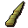

Unicorn
| Config name | unicorn |
| NPC id | 89 |
| Combat level | 15 |
| Hitpoints | 19 |
| Attack / Strength / Defence | 11 / 13 / 13 |
| Respawn | 180 ticks |
| Options | Attack |
| Category | unicorn |
| Wander range | 17 tiles from spawn |
| Max range | 19 tiles from spawn |
| Defined in | scripts/_unpack/225/all.npc |
Unicorn
Horse with a horn.
Show all 17 spawns on the world map → Open in knowledge graph →
Drops
Drop script: scripts/drop tables/scripts/unicorn.rs2 (category handler _unicorn)
Always dropped
| Item | Quantity | Rarity | Notes |
|---|---|---|---|
 Unicorn horn | 1 | Always |
Locations
| Area | Coordinates | Level | Count | Map |
|---|---|---|---|---|
| Beehives | 2783, 3466 | 0 | 1 | view |
| Beehives | 2791, 3460 | 0 | 1 | view |
| Entrana | 2838, 3370 | 0 | 1 | view |
| Entrana | 2850, 3378 | 0 | 1 | view |
| Entrana | 2860, 3375 | 0 | 1 | view |
| Entrana | 2863, 3378 | 0 | 1 | view |
| Exam Centre | 3283, 3355 | 0 | 1 | view |
| Exam Centre | 3286, 3349 | 0 | 1 | view |
| Jail | 3140, 3209 | 0 | 1 | view |
| Monastery | 3084, 3454 | 0 | 1 | view |
| Monastery | 3090, 3450 | 0 | 1 | view |
| Sorcerers' Tower | 2700, 3423 | 0 | 1 | view |
| Sorcerers' Tower | 2700, 3442 | 0 | 1 | view |
| Wizards' Guild | 2571, 3058 | 0 | 1 | view |
| Wizards' Guild | 2579, 3066 | 0 | 1 | view |
| Zoo | 2629, 3266 | 0 | 1 | view |
| Zoo | 2634, 3265 | 0 | 1 | view |
Quests
Related NPCs (category unicorn)
Referenced in scripts
scripts/quests/quest_upass/scripts/quest_upass.rs2